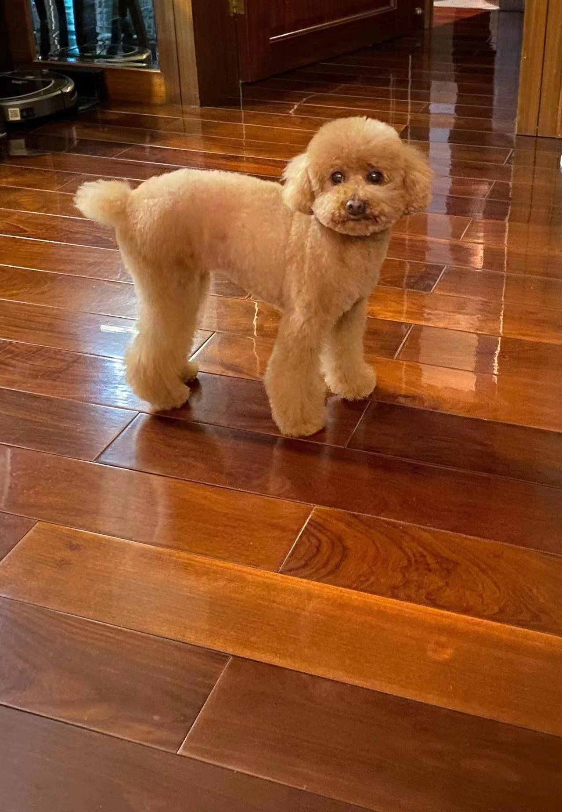
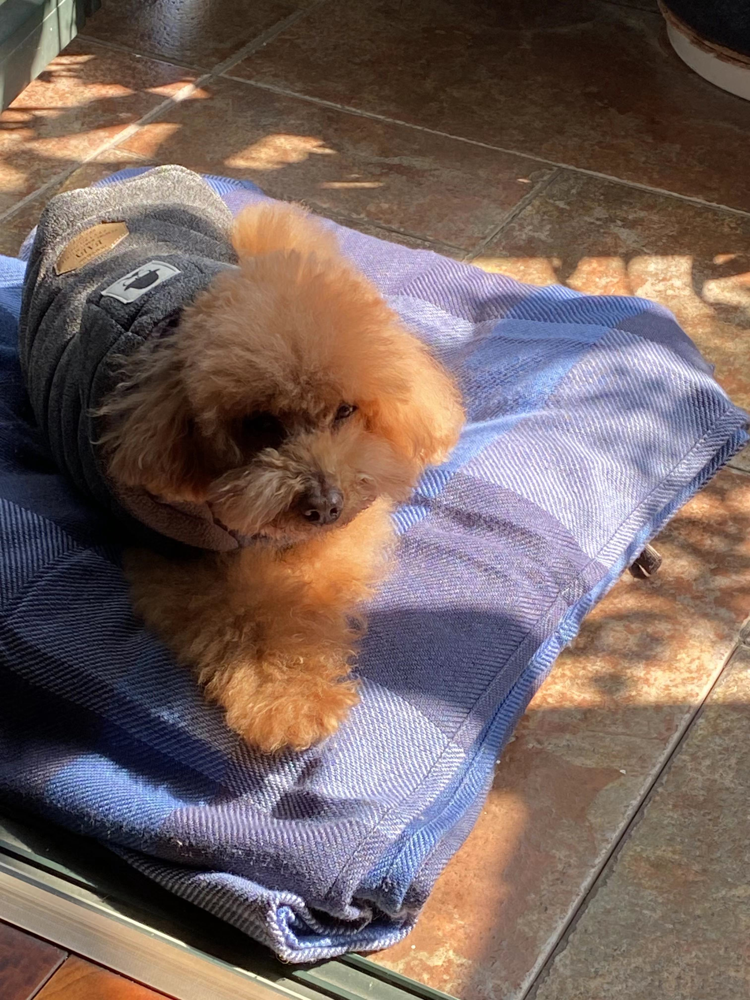

Cody dog

Cody is a 7yr old Pembroke Corgi owned by Yuqing. He was born in Cavalier Farms, Seattle. He prefers to spend his days lounging on the bean bag. Every day, he enjoys two walks around the neighborhood and likes to make friends with other doggie friends. If lucky enough, he might see the cyclist, but he is not allowed to give chase.
Cody loves traveling. He enjoys walking on the beach and taking sun naps. But he hates cold weather. He would like to stay at home lounging by the fireplace in winter.

Cody is playing

Cody in the death valley

Cody at the sea
Likes
- Travelling
- Lounging
- Tennis balls
Brownie

Brownie is an eight year old girl owned by my family. She is a Teddy dog from Shanghai. She loves lay on her bed enjoying the sunshine. Though she is a sweet and clever dog, she hasn't learned to shake hands yet.
Brownie is a shy dog. When we visited other people's house, she would follow closely us no matter where we went. Her favourite food is meat pie. But we never fed her too much since she is not young any more and can not digest too much food in one meal.

Brownie lay in the sunshine
Brownie is sleepy
Likes
- Meat Pie
- Her Family
- lay on her bed
Maple

Maple is a 2 year old tabby cat with brown stripes owned by Eileen. She is very playful and friendly but also loves lounging in the sun! Maple is a huge fan of treats - she has even learned how to open doors to steal some extra treats.
Sometimes Maple has boundless energy. At night, she gets the zoomies after eating her final meal of the day. It usually takes her another hour to settle down before she can take a long nap.

Maple is playing

Maple with a Christmas Tree

Maple lay in the sunshine
Likes
- Belly rubs
- Treats
- Stretching her paws